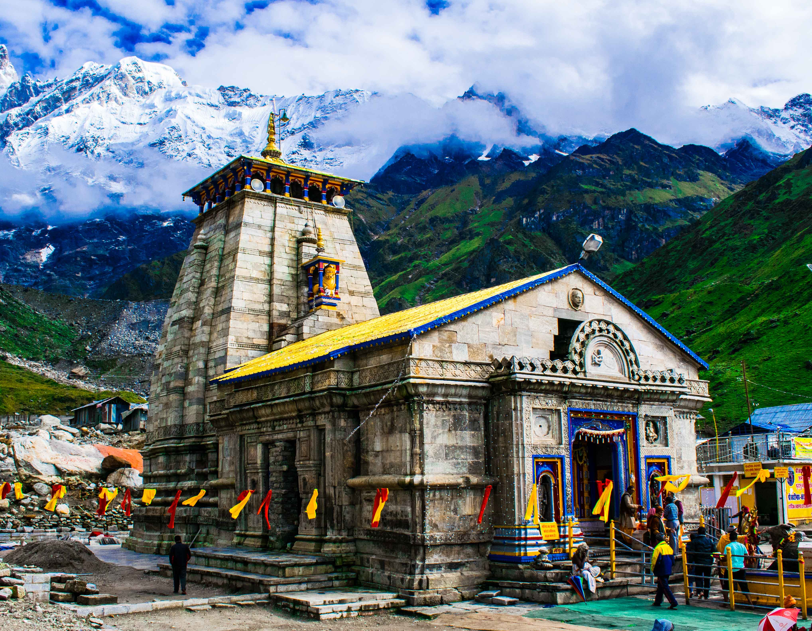

Cover Guide
Himalayan Yatras

2026–2027 Char Dham Yatra Blueprint: Opening Dates, Helicopter Logistics & Acclimatization Science
Plan your family’s Himalayan pilgrimage in the auspicious Dakshinavarta order—combining biometric pass timelines, Phata-Kedarnath chopper shuttles, and clinical altitude pacing for parents.
- Clockwise sacred order: Yamunotri → Gangotri → Kedarnath → Badrinath
- Mandatory 1,300 m Guptkashi/Barkot acclimatization nights before 3,583 m ascents
- Biometric yatra registration & helicopter weight/baggage planning tips